You travel
The map is the front door. Fly from coast to coast to coast, zoom into a city, and choose the Canadian you want to meet.
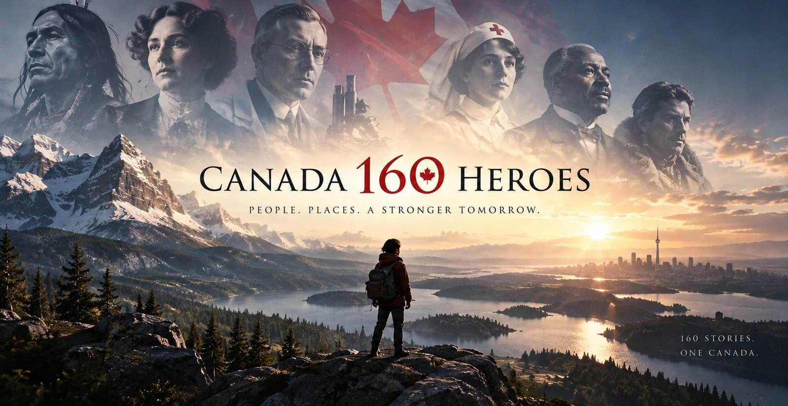
People. Places. A stronger tomorrow.
Drag to turn the view · scroll to come closer · choose a face
The collection
Every hero you meet gives you a film to step into, a story to explore, and a conversation of your own, grounded in the real record, sources included.
Live note
You don't read about the past here, you're in the room with it. Four things happen on every visit, and the last one is the point.
The map is the front door. Fly from coast to coast to coast, zoom into a city, and choose the Canadian you want to meet.

A short film puts you in the room, the lab, the stage, the trench, with the hero speaking to you directly, clearly labelled as reconstruction.
Then the conversation is yours. Ask what you actually want to know and get an answer in their voice, anchored to the documented record.
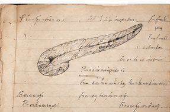
Where a hero's record is contested, you'll hear that too. Sources are on every page, and hard questions are encouraged. Ask Macdonald about 1885.
Same questions.
A deeper understanding.
Sir Frederick Grant Banting & Charles Herbert Best
In a borrowed University of Toronto laboratory over one hot summer, a country surgeon and a 22-year-old student isolated the extract that turned diabetes from a death sentence into a manageable condition.
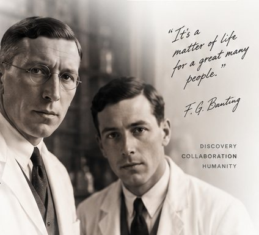
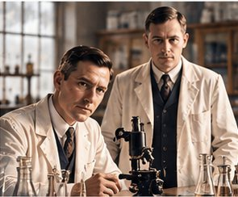
Live now
Try asking
Hot, and mostly discouraging. Macleod gave us a laboratory for the summer, ten dogs and one student assistant, then left for Scotland. We worked day and night, lost animals, adjusted the method, and failed for weeks before an extract finally lowered a diabetic dog's blood sugar in August.
Source: Dictionary of Canadian Biography, Banting
Because insulin did not belong to us. The rights went to the University of Toronto for one dollar each, so that it could be made widely and cheaply rather than held by the men who found it.
Source: Historica Canada, The Canadian Encyclopedia
The 1923 prize in Physiology or Medicine went to Banting and Macleod. I was not named. Banting was furious about it and split his share with me the same day; Macleod split his with Collip.
Source: Dictionary of Canadian Biography, Best
Nearly everything at first. The early extract was impure and unsafe for a human arm. It took James Collip's work as a biochemist to purify it before Leonard Thompson could be treated successfully in January 1922.
Source: Historica Canada, The Canadian Encyclopedia
Discovery is not the work of one mind alone, but of people who believe a better future is possible.Charles Best
In 1921, Sir Frederick Banting, a young surgeon with a bold idea, met Charles Best, a 22-year-old medical student. In a small laboratory at the University of Toronto, they set out to isolate a substance from the pancreas that could treat diabetes.
Through persistence, collaboration, and a willingness to take risks, they succeeded. Their discovery of insulin has since saved millions of lives around the world and remains one of the greatest medical breakthroughs in history.
Read the full story →1920 — Banting writes twenty-five words in a notebook at two in the morning.
1921 — A coin toss sends Best into the lab for a hot Toronto summer.
1922 — Leonard Thompson, fourteen, becomes the first person successfully treated.
1923 — The Nobel Prize in Physiology or Medicine.
Open the full timeline →Frederick Banting, surgeon. Charles Best, student. J.J.R. Macleod, physiologist, who gave them the laboratory. James Collip, biochemist, who purified the extract into something safe for a human arm.
Leonard Thompson, aged fourteen, the first patient. He lived another thirteen years.
The medical building at the University of Toronto, where the laboratory sat under the roof. Toronto General Hospital, where the first injection was given in January 1922. London, Ontario, where the idea was written down.
Dictionary of Canadian Biography, entries for Banting, Best, Macleod and Collip. Historica Canada, The Canadian Encyclopedia. University of Toronto archival holdings, including Banting's notebook of October 1920.
Portraits and films on this page are AI reconstructions, labelled as such and grounded in the cited record.
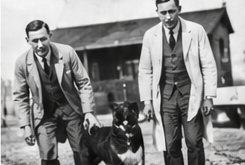
The story
In October 1920, a young London, Ontario surgeon named Frederick Banting could not sleep. He had been reading about the pancreas, and an idea had lodged itself in his head: if the digestive juices of the pancreas were destroying whatever it was that regulated blood sugar, then tying off the pancreatic ducts might preserve it long enough to extract. He wrote the thought down in twenty-five words and took it to Toronto.
J.J.R. Macleod, professor of physiology at the University of Toronto, was unconvinced but gave Banting what he asked for: a laboratory for the summer, ten dogs, and a student assistant. Two students were qualified. They flipped a coin. Charles Best, twenty-two years old, won the toss.
The summer of 1921 was brutally hot and the work was worse. But by August the pair had an extract that lowered the blood sugar of a diabetic dog. Biochemist James Collip joined to purify it into something safe for a human arm. In January 1922, fourteen-year-old Leonard Thompson, dying of diabetes at Toronto General Hospital, became the first person successfully treated. His blood sugar fell. He lived another thirteen years.
Banting, Best and Collip sold their patent rights to the University of Toronto, for one dollar each. Banting was adamant that insulin belonged to the people who needed it, not to the men who found it. In 1923 the Nobel Prize in Physiology or Medicine went to Banting and Macleod; Banting, furious that Best had been left out, immediately split his share with him. Macleod split his with Collip.
Insulin does not belong to me.
It belongs to the world.Frederick Banting
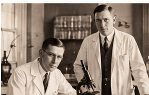
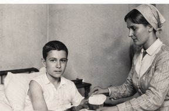
The legacy
Insulin transformed diabetes from a death sentence into a manageable condition, and opened a new era in medicine. A Canadian discovery that continues to save millions of lives.
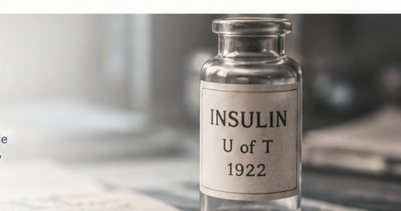
Timeline
A bold idea. A small lab. A global impact.
1920
In London, Ontario, a young surgeon named Frederick Banting could not sleep. He had been reading about the pancreas, and an idea had lodged itself in his head: if the digestive juices were diverted, the pancreatic ducts might preserve a hormone that could treat diabetes. He wrote the thought down in twenty-five words and took it to Toronto.
1921
J.J.R. Macleod, professor at the University of Toronto, gave Banting a small laboratory, ten dogs, and a student assistant. Charles Best, twenty-two years old, won the coin toss to join. Through a long, hot summer they worked day and night, learning from failure, adjusting their methods, and finally producing an extract that lowered the blood sugar of a diabetic dog.
1922
In January, fourteen-year-old Leonard Thompson, dying of diabetes at Toronto General Hospital, became the first person successfully treated with insulin. His blood sugar fell. His life was saved. It was the moment the world saw what was possible.
1923
Insulin's potential quickly reached the world. Banting and Macleod were awarded the Nobel Prize in Physiology or Medicine in 1923. Banting shared his prize with Best; Macleod shared his with Collip. The patent was sold to the University of Toronto for one dollar, so that insulin could be available to everyone who needed it.
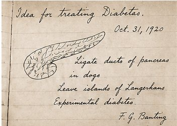
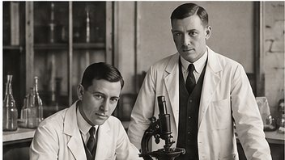
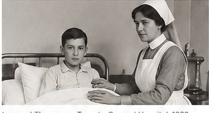
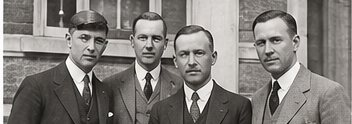
Key people
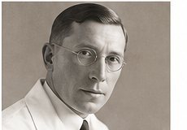
Frederick Banting
Surgeon
Charles Best
Student
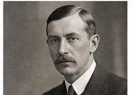
J.J.R. Macleod
Physiologist
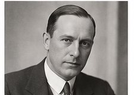
James Collip
Biochemist
Support
Your support helps bring Canada's extraordinary people to life, through film, education and immersive experiences.
As a thank you, you'll receive a personalized digital certificate from CIHE, recognizing your support and the legacy you're helping to share with future generations.
Support a hero →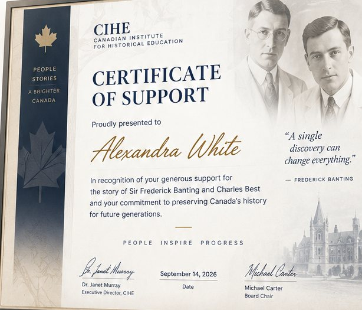
How it works
In just a few steps, you can make a difference and receive your personalized certificate.
Support a scientist, cultural figure or educational initiative.
Select your contribution amount.
Get your personalized digital certificate by email, ready to share.
History lives when people believe in it.CIHE
The collection
Published heroes first, then those in production. Choose a row and the view moves to that place.
🍁
160 lives. A shared tomorrow.